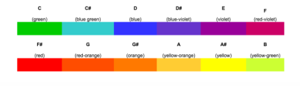

tobias heeringa
creative technologist
graphic & UX design
projects
-
Uproot - 2017
Uproot is an Auckland based urban agriculture startup. We grow leafy green vegetables using a relatively new technology named aeroponics, a method of growing plants out of soil. Our intention behind the business comes from the desire to disrupt New Zealand’s reliance on traditional methods of agriculture, methods we recognise as inefficient and destructive to our unique environment. Our philosophy is to reduce our environmental impact by bringing plant agriculture out of the country and into the city, while producing delicious, nutritious food locally.
I took a leadership role within Uproot, facilitating the construction of our first prototype and putting together our crowdfunding campaign narrative.
Made in collaboration with Matvey Tarchutkin / Julian de Villiers / Connor Curlewis / Curtis Layton -
Soma - 2017
Soma is an interactive visual art installation, the product of an iterative, team process, informally structured around cycles of group discussion, prototype development and critique. Parallel to this process, research was conducted to provide context for both the artistic concept and the technology approach.
The visual form of the installation exists in two states, a video that scrubs back and forth between a person submerged and emerging from water. The control of the video is done via a large physical lever, weighted in a way to continually swing in a pendulum like movement, changing the appearance of the installation long after the fact of user interaction. The installation’s themes of control and balance are inspired by Aldous Huxley’s dystopian science fiction novel, Brave New World (1932). The theoretical reasoning behind the project was influenced by a commentary of society by author Aldous Huxley in his book ‘Brave New World’.
Written as a critique of the utilitarianism nature of western society he found himself in, Huxley’s novel is relevant today more than ever due to consumerism and the pursuit of immediate pleasure at the expense of individuality and a greater concern for the world. We wanted to take influence from his book by representing elements of sedation and suffering exhibited by characters in the story, John the Savage who brings about suffering upon himself, and the larger London society that exists in a dystopianly familiar order. The nature of the video is intended to reflect this society in states of sedation and suffering.
Made in collaboration with Matvey Tarchutkin / Trak Gray -
IVRE - 2016
The Illustrated Virtual Reality Environment is an exploration of the power of virtual reality to act as a medium for artistic expression. It is a 360 degree illustrated mural that wraps seamlessly in all directions, hidden at first, but uncovered by the gaze of the user as they look around within the virtual world. I created it using Adobe Illustrator, the game engine Unity and the 3D modeller Maya.
The project explored what steps needed to be taken to convert 2 dimensional, flat drawings into a mural that would wrap seamlessly around the inside of 3 dimensional sphere. I also aimed to explore what existing mediums lend themselves well to this process (such as photo collages) and what precautions needed to be taken to ensure correct perspective is kept when 2D images are wrapped to the inside of a sphere.
With the burgeoning relevance of virtual reality in the the modern world, those using it are finding themselves in the position of being pioneers. Given this is the case, we have a unique opportunity to shape how this technology is used beyond its existing traditional applications to instead explore more artistic measures. Art has never been limited to one medium, and I feel virtual reality offers fascinating new ways to approach the way we view and consume art and specifically in this case, illustration.
-
Synesthesia VR - 2016
Synesthesia VR is a device that allows the user to experience a simulation of synesthesia, the neurological brain condition that allows bearers to experience multiple senses from one stimulus. This was part of a research assignment in which I was testing a hypothesis of whether or not the condition could be induced in oneself through longterm exposure to the device.
My assumption before the testing was that I would see some influence of the device on my subconscious ability to associate colour and sound. However, results from the testing phase proved that the device doesn't work to induce synthetic synesthesia. The data I gained from answering the questions above showed a recurring trend across the two week period, that I would not see colours when playing with the blindfold. The only times I did ‘see’ colours was when I actively attempted to imagine them, which I wouldn't regard as a true synesthetic experience.
It uses an Oculus Rift DK1 Headset and a MIDI keyboard connected to my computer. On the computer I am running Garageband for the piano sounds, and a virtual reality program I created that displays coloured lights when notes are played on the keyboard. Each note has a corresponding colour, so the idea was that by playing using this device I would somehow be able induce a synthetic version of the synesthesia condition in myself, by training my brain to associate the 12 notes of the octave to 12 different colours. -
Find Your Perfect Fit - 2016
Find Your Perfect Fit is an interactive web application built for the New Zealand AIDS Foundation. Its purpose is to match users with their best suited condom from a database based on information they provide. The app was scheduled to go live on the NZAF website in late 2016 for a promo event.
I was in charge of illustration and UI design. I designed the mockups and drew all of the assets used to build the app.
In collaboration with Patricia Danielle Tan / Matvey Tarchutkin

{kind=link}
{kind=link}